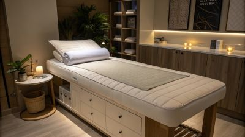

←
리스트로 돌아가기
수림중국마사지

업체 기본 정보
해도동마사지⭐ 편안하게 연락 주세요. ^^ ★★ 착한가격/남여공용/커플환영 ⭐ 해도동마사지 최고의 서비스를 보장하는 수림중국마사지입니다. 행복을 전달하는 최고의 마사지로 고객님들 한분한분 소중한시간 헛되이 되지않도록 최선을다하는 테라피로 만족시켜 드리겠습니다.
전신 관리아로마마사지중국마사지남여공용커플환영
경북포항시 남구해도동해도동마사지수림중국마사지전신 관리아로마마사지중국마사지남여공용커플환영20대힐링샵
주소 · 연락처 · 영업시간
주소
해도동마사지 | 해도동 행정복지센터 인근
경북 포항시 남구 해도동 422-23 (해도동 행정복지센터 인근, 주차 가능 - 옆 골목 공영주차장 이용)
경북 포항시 남구 해도동 422-23 (해도동 행정복지센터 인근, 주차 가능 - 옆 골목 공영주차장 이용)
전화
0507-1859-6446
영업시간
24시간 (폰이꺼진경우 : 마감, 랜덤 휴무)
코스 및 가격
전신 관리
A코스 (주간)
60분
40,000원
전신 + 배 (아로마)
A코스 (야간)
60분
50,000원
전신 + 배 (아로마)
B코스 (주간)
80분
60,000원
전신 + 등+배 (아로마)
B코스 (야간)
60분
70,000원
전신 + 등+배 (아로마)
C코스 (주간)
110분
90,000원
전신 + 발+등 (아로마)
C코스 (야간)
60분
100,000원
전신 + 발+등 (아로마)
D코스 (주간)
130분
110,000원
전신 + 발+등 (아로마)
D코스 (야간)
60분
120,000원
전신 + 발+등 (아로마)
E코스 (주간)
160분
140,000원
전신 + 발+팩+등 (아로마)
E코스 (야간)
60분
150,000원
전신 + 발+팩+등 (아로마)
F코스 (주간)
180분
190,000원
전신 + 발+팩+귀청소 (아로마)
F코스 (야간)
60분
200,000원
전신 + 발+팩+귀청소 (아로마)
관리사 정보
전원 중국인 여 쌤들 | 20대 & 힐링샵 | 상기코스 전문과정 수료
이용 후기
별하늘님
A코스 주간 60분 받았는데 전신과 배 아로마까지 받으니 정말 시원했어요.
하늘별님
F코스 주간 180분 받았는데 전신과 발, 팩, 귀청소까지 모두 받으니 정말 종합적인 힐링이 되었습니다. 해도동마사지 편안하게 연락 주세요라는 문구가 실제로 그대로였고, 최고의 서비스를 보장하는 수림중국마사지에서 행복을 전달하는 최고의 마사지로 고객님들 한분한분 소중한시간 헛되이 되지않도록 최선을다하는 테라피로 만족시켜 드리겠습니다라는 말씀이 실제로 느껴졌습니다. 착한가격/남여공용/커플환영이라는 설명이 정확했고, 전원 중국인 여 쌤들이 20대 힐링샵이고 상기코스 전문과정을 수료하신 분들이라 그런지 중국 전통 마사지의 정통 기법을 경험할 수 있었습니다. 해도동 행정복지센터 인근에 위치해서 접근성이 좋았고, 주차도 옆 골목 공영주차장을 이용할 수 있어서 편리했습니다. 전신 관리 코스가 A부터 F까지 다양하게 구성되어 있어서 선택의 폭이 넓었고, 주간과 야간으로 나뉘어 있어서 시간대에 맞게 선택할 수 있었습니다. 각 코스마다 전신 기본에 배, 등, 발, 팩, 귀청소 등 다양한 옵션이 추가되어 있어서 원하는 부위를 집중적으로 관리받을 수 있었습니다. 24시간 운영이라서 시간대 선택이 자유로웠고, 회원가 할인도 받아서 가성비도 뛰어났습니다. 남여공용이고 커플도 환영한다고 해서 친구와 함께 갔는데 정말 편안하게 이용할 수 있었습니다.